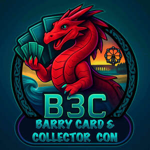

Trade Mark Journal No.2025/047 21 November 2025
UK00004289632 5 November 2025 (16,35,41)

- Class 16
- Stickers; posters; cards; pens; pencils ; Comics; Comic strips; comic features; Comic books; Comic strips; Manga comic books; Comic magazines; Newspaper comic strips; Printed comic strips; Comic strips [printed matter]; Children's comics; Cartoon strips; Graphic art books; Manga graphic novels; Printed cartoon strips; Cartoon prints; Graphic art reproductions; Sketch books; Cartoon strips [printed matter]; Graphic art prints; Series of fiction books; Books featuring fictional stories; Graphic novels; Poster books; Fantasy books; Books featuring fantasy stories; Series of computer game hint books; Caricatures; Canvas panels for artists; Graphic reproductions; Reproductions (Graphic -); Print characters; Fiction books; Printing characters; Printed art reproductions; Newspaper cartoons; Saucers (Watercolor [watercolour] -) for artists; Watercolor [watercolour] saucers for artists; Painting sets for artists; Art etchings; Typographic characters; Graphic drawings; 3D wall art made of paper; Autograph books; Works of art and figurines of paper and cardboard, and architects' models; Animation cels; Story books; Lithographic works of art; Paper for use in the graphic arts industry; 3D wall art made of card; Fanzines; Works of art of paper; Art prints; Cheque book covers; Art paper; Drawing books; Computer game hint books; Works of art made of paper; Painting books; Writing or drawing books; Film pens; Romance novels; Graphic prints; Fine art prints; Events programmes; Events albums; Event programs; Souvenir event programs; Event albums.
- Class 35
- Subscriptions (arranging of) to books, reviews, newspapers or comic books; Retail services for works of art provided by art galleries; Cinematographic film advertising; Promotion of sports competitions and events; Promotion of special events; Promotion services relating to esports events; Marketing services relating to esports events; Arranging promotion of charitable fundraising events; Advertising services relating to esports events; Conducting of commercial events; Organization of events, exhibitions, fairs and shows for commercial, promotional and advertising purposes; Promotion of goods and services through sponsorship of sports events; Arranging and conducting of promotional events; Organisation of exhibitions and events for commercial or advertising purposes.
- Class 41
- Providing online non-downloadable comic books and graphic novels; Providing online comic books, not downloadable; Providing on-line non-downloadable comics; Exhibition of cine films; Entertainment in the nature of live performances and personal appearances by a costumed character; Entertainment services featuring fictional characters; Organisation of comedy shows; Production of animated cartoons; Production of comedy shows; Comedy club services; Rental of costumes [theatrical or masquerade]; Providing online graphic novels, not downloadable; Creating animated cartoons; Book publishing; Auditioning for tv game shows; Rental of electronic book readers; Electronic book reader rental; Hypnotist shows [entertainment]; Organization of cosplay entertainment events; Entertainment by film; Production of a continuous series of animated adventure shows; Timing of sports events; Sports events (Timing of -); Organising of sporting events; Organising sporting events; Dance events; Organising of sports events; Organization of sporting events; Organization of sporting events and competitions; Arranging of sporting events; Organisation of sporting events; Organising of sports competitions and events; Organisation of sporting events and competitions; Production of sporting events; Organisation of entertainment events; Organising of recreational events; Organising community sporting events; Provision of sporting events; Organization of entertainment events; Ice-skating events (Organising of -); Handicapping for sporting events; Arranging of cultural events; Conducting of sports events; Hosting of entertainment events; Publication of calendars of events; Organisation of cultural events; Organising gymnastics events; Gymnastics events (Organising of -); Organization of dancing events; Organization of sporting events and competitions, involving animals; Organising of sporting events, competitions and sporting tournaments; Organising of football events; Management of events for sporting clubs; Conducting of cultural events; Organising dancing events; Organisation of esports events; Conducting of entertainment events; Organisation of sporting competitions and sports events; Organisation of musical events; Organising community cultural events; Organisation of cycling events; Organising events for cultural purposes; Handicapping services for sporting events; Production of esports events; Organizing community sporting and cultural events; Organising events for entertainment purposes; Ticket information services for sporting events; Organisation of entertainment and cultural events; Services for the organisation of sports events; Entertainment provided during intervals of sporting events; Organisation of educational events; Arranging of educational events; Time recording services for sporting events; Entertainment services relating to sporting events; Organising of sports competitions and sports events; Organising of sports events and of sports competitions; Entertainment services in the nature of sporting events; Conducting of live sports events; Organisation of automobile rallies, tours and racing events; Organising of sports and sports events; Presentation of live entertainment events; Organizing cultural and arts events; Booking of sports personalities for events (services of a promoter); Production of sporting events for radio; Provision and management of sporting events; Production of sporting events for television; Musical events (Arranging of -); Arranging of musical events; Organization of events for cultural purposes; Conducting of educational events; Ticket information services for esports events; Production of sporting events for film; Booking of seats for shows and sports events; Services for the organisation of football events; Conducting of live esports events; Conducting of live entertainment events; Entertainment services in the nature of skating events; Provision of recreational events; Organisation of events for cultural, entertainment and sporting purposes; Provision of information relating to sporting events; Ticket procurement services for sporting events; Master of ceremony services for parties and special events; Providing facilities for sports events; Production of live entertainment events; Organization of animal racing events; Ticket information services for entertainment events; Rental of equipment for use at sporting events; Organising of motor racing events; Arranging and conducting of sports events; Entertainment services provided during intervals at sports events; Sporting event organization; Organisation of automobile racing events; Advisory services relating to the organisation of sporting events; Organisation of vehicle racing events; Production of esports events for television; Arranging for ticket reservations for shows and other entertainment events; Disc jockeys for parties and special events; Booking of seats for entertainment events; Providing facilities for sporting events, sports and athletic competitions and awards programmes; Arranging and conducting of entertainment events; Disc jockey services for parties and special events; Ticket reservation for cultural events; Entertainment services in the nature of organizing social entertainment events; Horse jumping events (Organising of -); Providing information on congress events; Organising of sporting activities and competitions; Organising of sporting activities or competitions; Arranging and conducting of live entertainment events; Video editing services for events; Preparing subtitles for live theatrical events; Ticket procurement services for entertainment events; Providing will-call ticket services for entertainment, sporting and cultural events; Arranging and conducting of sports events for charitable purposes; Organisation of sports events in the field of football; Organising of sporting activities and of sporting competitions; Entertainment services in the nature of arranging social entertainment events; Rental of equipment for use at athletic events; Booking of performing artists for events (services of a promoter).
Barry Card and Collector Con Limited